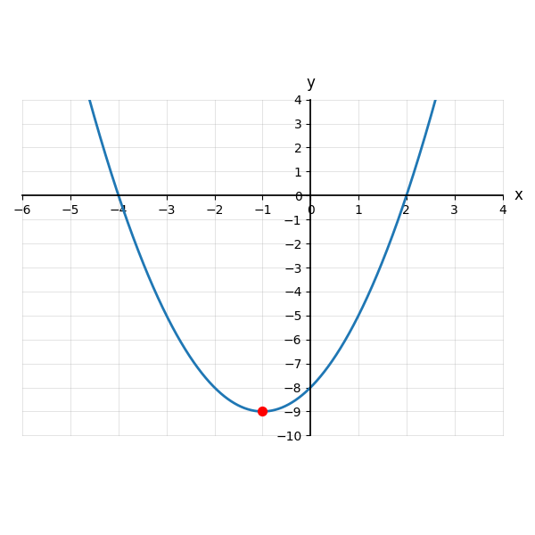
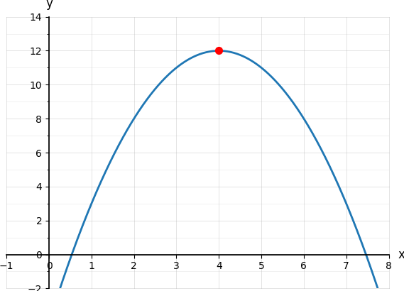
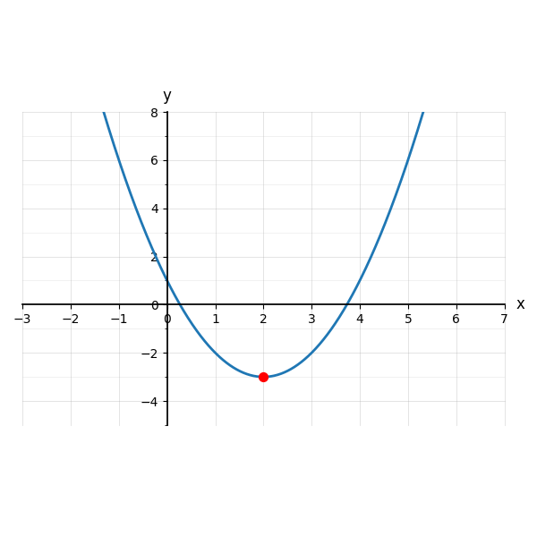
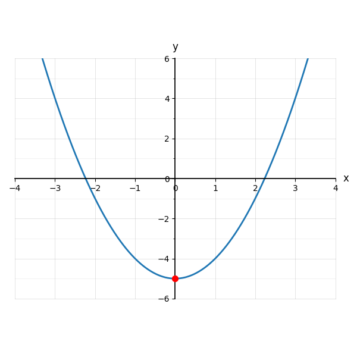
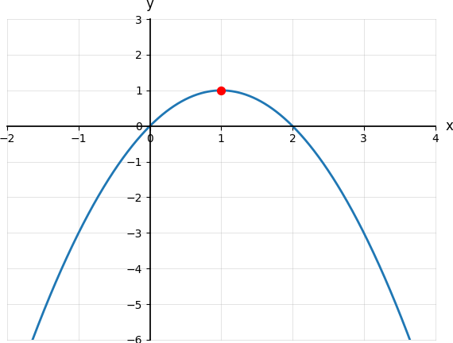

6.1 Introduction to Quadratics
- Recognize a quadratic function from an equation or graph
- Describe the shape and direction of a parabola
- Identify the vertex as a minimum or maximum
- Describe the domain and range of a quadratic function
Warm-Up
1. Find the degree of x3 − 3x4 + 2x2 − x + 42.
2. A line has equation x = 5. What kind of line is it? What is its slope?
3. Plot (−1, 3), (0, 1), (1, 5). Could these come from a linear function?

6.1.1Identifying Quadratic Functions
| Function | Degree | Quadratic? What is it? |
|---|---|---|
| f(x) = 3x2 − 4x + 1 | ||
| g(x) = 5x − 9 | ||
| h(x) = 7x3 + 2 | ||
| p(x) = 4x2 + 6 | ||
| q(x) = 10 − x | ||
| r(x) = x2 − x3 | ||
| s(x) = −3x2 + 7x − 1 | ||
| t(x) = 4 |
6.1.2Features of Quadratic Functions
coefficient on x2 → opens
coefficient on x2 → opens
f(x) = 2x2 + 3x − 5
f(x) = −0.5x2 + 4
f(x) = 3x2 − 4x + 1
Opens upward → the vertex is a
Opens downward → the vertex is a
f(x) = −x2 + 4x + 7 has vertex (2, 11). Is that a max or a min?
f(x) = 0.5x2 − 3x + 2.5 opens , so its vertex is a .
The axis of symmetry is always x = , where h is the of the vertex.
f(x) = 14(x + 2)2 − 4 has vertex and axis of symmetry .
Do you need a graph to find the axis of symmetry?
Opens:
Vertex:
Axis of symmetry:
6.1.3Domain and Range
Opens upward → range is
Opens downward → range is
Domain: Range:
Domain: Range:
Opens:
Vertex:
Axis of symmetry:
Domain:
Range:
Practice
Identify
| Equation | Quadratic? | Why |
|---|---|---|
| 1. y = 4x2 − 3x + 1 | ||
| 2. y = (x − 6)2 − 2 | ||
| 3. y = x3 − 5x | ||
| 4. y = −2x2 | ||
| 5. y = 12x + 9 |
Opening Direction
6. y = −3x2 + 4
7. y = 0.2x2 − 8
8. y = −(x − 1)2 + 7
9. y = 5x2
10. y = −0.5x2 − 12
Vertex & Axis of Symmetry
11. A parabola opens upward with lowest point (4, 3). Vertex: Axis:
12. A parabola opens downward with highest point (−1, −5). Vertex: Axis:
13. A parabola opens upward with vertex (2, −6). Axis:
14. A parabola opens downward with axis x = −3. One possible vertex:
15. A parabola has vertex (0, 4) and opens downward. Max or min?
Graph Interpretation
16.

Vertex Axis
Domain Range
17.

Vertex Axis
Domain Range
18.

Vertex Axis
Domain Range
19.

Vertex Axis
Domain Range
20.

Vertex Axis
Domain Range